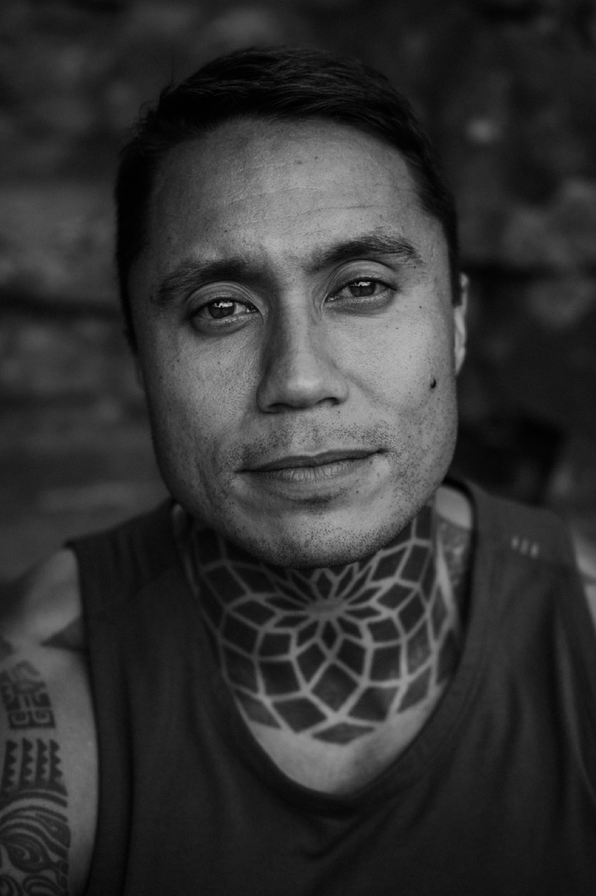
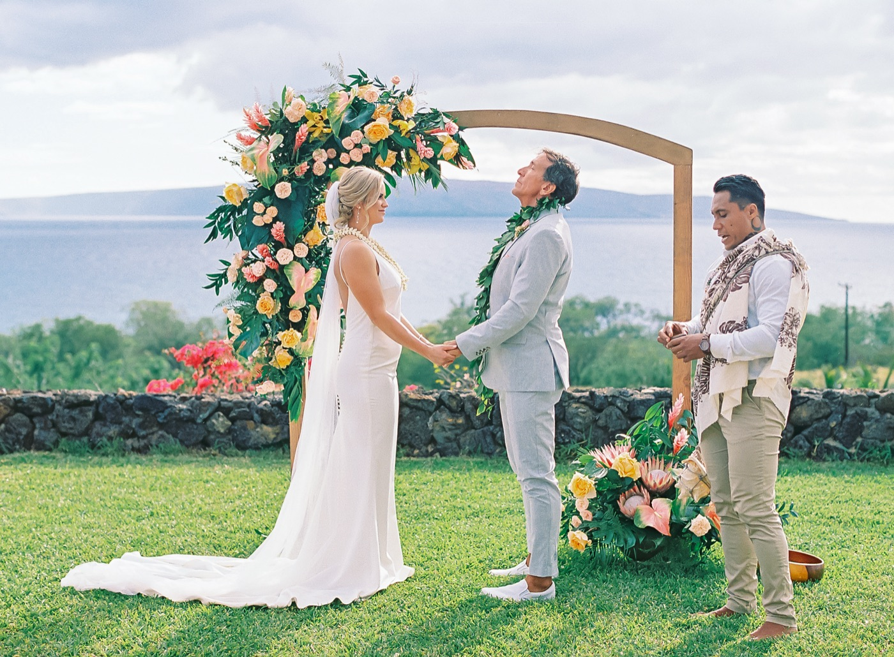
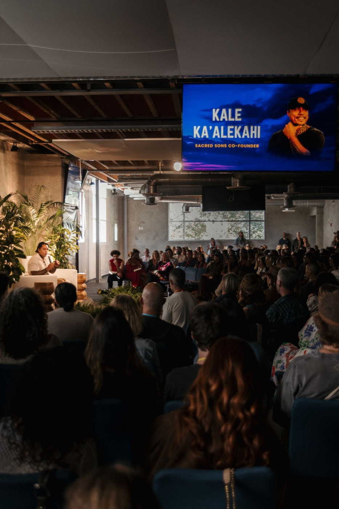
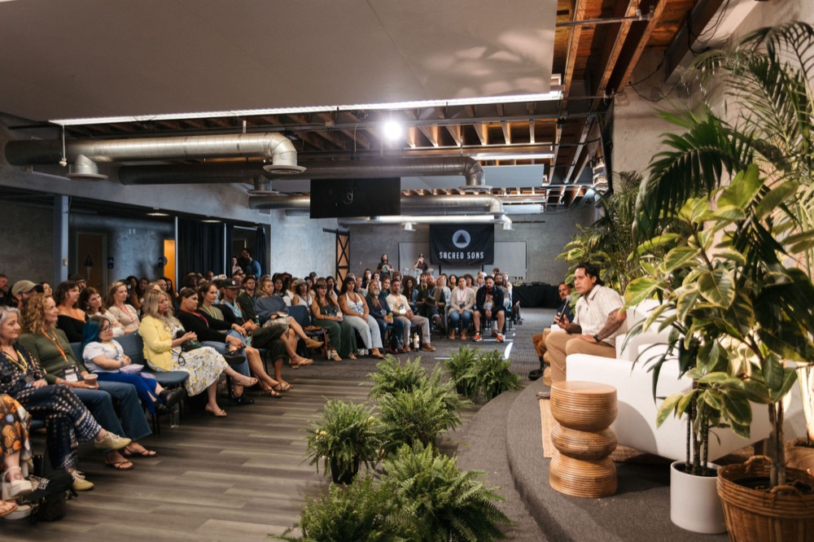
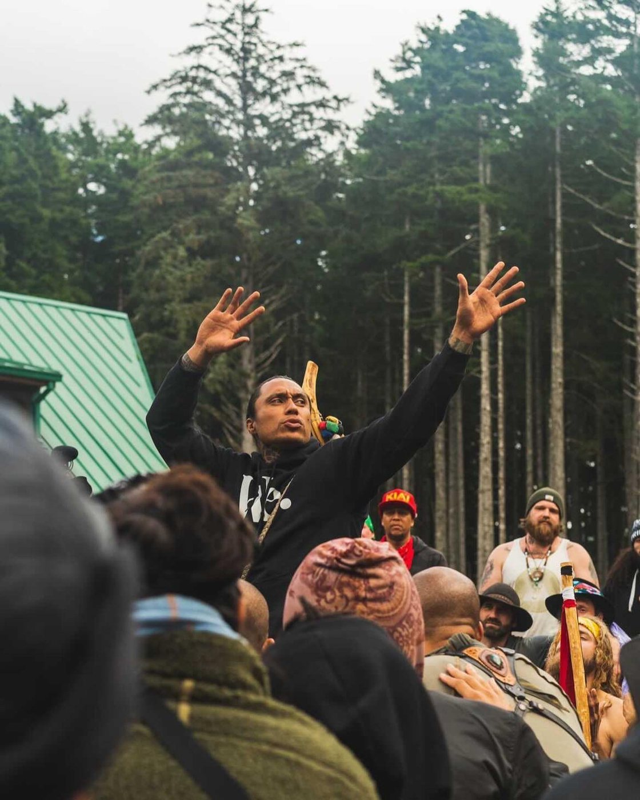
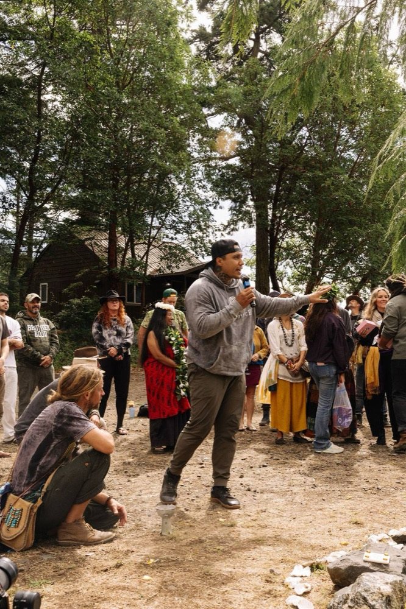
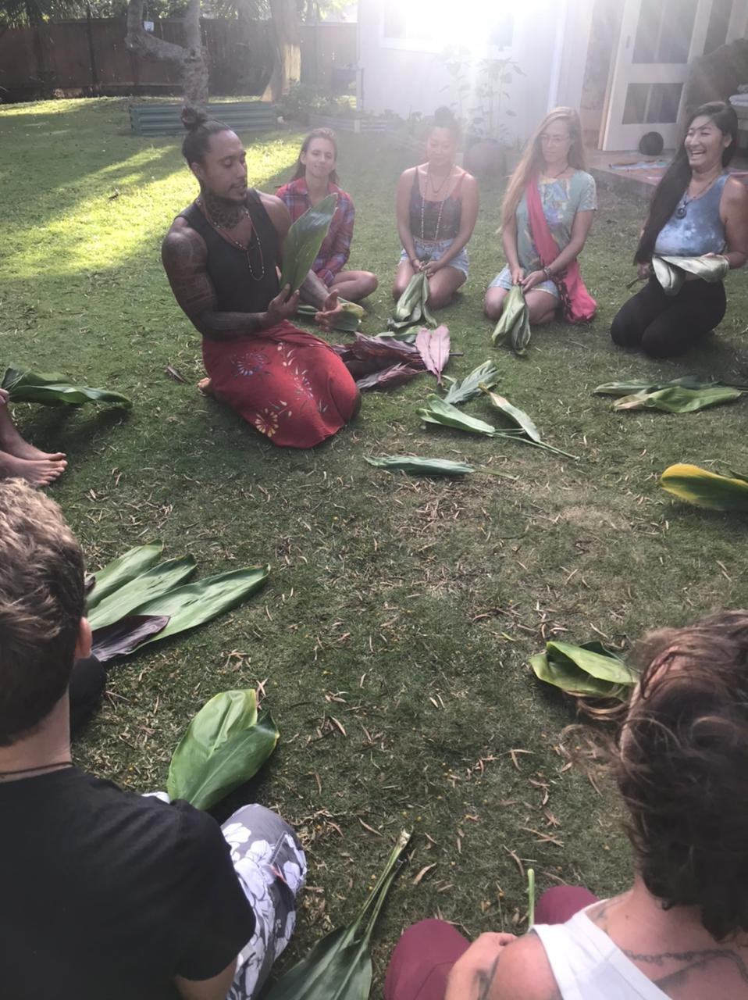

Ordained Minister · Maui Wedding Officiant · Teacher
Ceremony, teaching and gathering, held with care.
I officiate weddings and life ceremonies, speak to groups, mentor individuals, and lead cultural experiences for teams and resort guests. Everything I offer can be booked here.

Ways to work together
Weddings and Ceremonies
Weddings, vow renewals, blessings, memorials and land blessings.
Speaking
Talks for conferences, schools, gatherings and organizations.
Coaching and Mentorship
The Return Circle, a 12-week small group, and one-on-one Mentorship by application.
Group and Resort Experiences
Movement, culture and wellness sessions for teams and guests.

Weddings and Ceremonies
Every kind of ceremony, made personal.
Over 15 years, I have officiated for more than 1,000 couples on Maui, at beaches, resorts and private venues. I also lead funerals and memorials, land and home blessings, and ʻohana blessings. Each ceremony is shaped around the people in it, and couples can receive counsel on their relationship as they prepare.
- Weddings, elopements and vow renewals
- Funerals and celebrations of life
- Land, home and business blessings
- Baby blessings
What couples say
Rated 4.6 out of 5 by couples on Yelp
Couples have written about their ceremonies with me for more than a decade. You can read their reviews on Yelp, listed under my ministerial name, Kahu Kaalekahi.

Speaking
Talks that people carry home.
I speak on leadership, community, rites of passage, and what older ways of living can teach us about how we live now. My background spans two decades of land-based and Indigenous knowledge education and more than a decade of leading rites of passage work with people of every age.
- Keynotes and conference talks
- Schools, youth programs and universities
- Community gatherings and memorial events
- Panels and podcasts



Coaching and Mentorship
Ancestral intelligence, applied to your life.
Most of my coaching now happens in The Return Circle, a 12-week small group for members of The Return. We meet live every week, and each person builds a plan for their own body, home, relationships and spiritual life, with a small pod to keep them honest.
For the few who want my direct attention over months, I offer one-on-one Mentorship (6 months, online) and Immersion (12 months, online and in person on Maui). Both are by application only, and I keep the number of clients small.
What you are investing in is more than twenty years of lived practice. These are teachings held by elders and knowledge keepers and rarely shared in the open. I have spent my life earning them, testing them against the research, and carrying them into communities across the Pacific, the Americas, Europe, Australia and Southeast Asia. I am a custodian of land and sea, and I live these teachings every day for the good of my family, my community and the places I care for.
- Apply. Tell me where you are and what you want to change.
- Hear back. I read every application myself.
- Start. Join the next Circle, or book a Clarity Session for Mentorship and Immersion.

Group and Resort Experiences
Movement and culture for teams and guests.
The Reset brings together natural movement, breathwork, and sound in a 90-minute session designed to wake you up from the inside out. Built on the movement patterns that have kept humans strong and capable for thousands of years, it trains mobility, coordination, and resilience through play and connection.
You’ll leave feeling more energized, more present in your body, and more alive than when you arrived. It’s a practice for vitality and longevity that leaves you stronger in your body, sharper in your mind, and more connected to the people beside you.
- Resort guest programs
- Corporate and team retreats
- Private group bookings

The Return
One small step a day.
The Return is my monthly membership for anyone who wants to live closer to the land, their body and their people. Each month follows a new theme with the seasons and comes with a 30-day challenge: one small, practical step a day.
Members also join a monthly live call where I teach and answer questions, recorded if you miss it. Everything else runs on its own, so you can do it from anywhere, on your own time.
Start with the free self-test. The Return Standard takes about four minutes and shows how much of your life still runs without the machine.
Take the free testQuestions
Frequently asked questions
How much does a wedding ceremony cost?
Every ceremony is quoted around your day: the date, location, guest count and what you would like included. Book a short call or send me a note with your plans, and I will reply with a quote.
Where on Maui do you hold ceremonies?
Anywhere on Maui, including beaches, resorts, private homes and wedding venues.
Can our ceremony include Hawaiian traditions?
Yes. Many couples choose an aloha greeting, a lei exchange and the Oli Aloha chant. If you would rather keep it simple or bring in traditions from your own families, we can shape the ceremony that way instead.
Can we write our own vows?
Yes. Every part of the ceremony can be changed, including your vows, readings and poems. You can read a full sample on the wedding script page.
Do you lead ceremonies other than weddings?
Yes. I also lead elopements, vow renewals, funerals and celebrations of life, land, home and business blessings, and baby blessings.
How do we book?
Start with a short call through the booking button on this page. We will talk through your plans, and I will reply with availability and next steps.
How is The Reset priced for a group?
Pricing depends on your group size, location and schedule. Send me your dates, the number of guests and your budget, and I will put together a proposal that fits.
How does one-on-one coaching work?
Most coaching happens in The Return Circle, a 12-week small group that meets online every week. One-on-one Mentorship (6 months) and Immersion (12 months) are by application. Mentorship and Immersion applicants begin with a 60-minute Clarity Session for $500, which is credited toward the program if they join within 14 days.
Ready to book?
Send a note about what you have in mind and I will reply with availability and next steps.